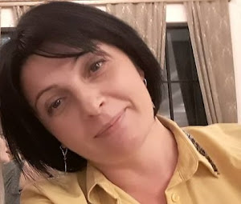

ჩემ შესახებ
უმაღლესი განათლება
ცხინვალის სახელმწიფო უნივერსიტეტი - ფილოლოგის, გერმანული და ინგლისური ენების სპეციალისტი (1997-2002წ)
ზოგადი განათლება
სსიპ გორის მუნიციპალიტეტის სოფელ ფხვენისის საჯარო სკოლა - (1986-1997წ)
სამუშაო გამოცდილება
- შინდისის საჯარო სკოლა - 2020-დან დღემდე - სახვითი და გამოყენებითი ხელოვნების პედაგოგი
- შინდისის საჯარო სკოლა - 2014 -2020 წელი საინფორმაციო მენეჯერი (სკოლის ვებ -გვერდის, Facebook გვერდის გაკეთება და მართვა, პროექტების წერა. Webmail-თან მუშაობა.)
- ,,ბილიკის" დღის ცენტრი ,,სხივი" –2008წ. -2013 წელი - კომპიუტერის პედაგოგი (კომპიუტერული პროგრამების შესწავლა ბილიკის ბენეფიციარებისთვის და მათი მშობლებისთვის)
- საზოგადოება ,,ბილიკი" - 2009წ-2010 წელი- სოციალური მედიის ხელმძღვანელი, ტრენერი, ტრენინგების ჩატარება შიდა ქართლის მასშტაბით (სოციალური მედია, ბლოგების გაკეთება და ადმინისტრირება)
- საზოგადოება ,,ბილიკი" - 2008-2013წელი - კომპიუტერის პედაგოგი
- კომპიუტერული პროგრამების შესწავლა სოციალურად დაუცველი ბავშვებისთვის
- ფხვენისის საჯარო სკოლა - 2006-2008 წელი - ინგლისური ენის პედაგოგი
პროფესიული განვითარების და პროფესიული გადამზადების კურსები:
- ,,Traditional Blue Tablecloth for Developing Creative Industries” 2020-2021
- ,,ტექნოლოგიების სწავლა-სწავლების პროცესში გამოყენება“ – 2020 წელი
- ბავშვთა და გოგონათა უფლებების დაცვა შიდა ქართლში - ევროკავშირი საქართველოსათვის გორი (2017წ)
- პროფორიენტაციისა და კარიერის დაგეგმვის სწავლების კურსი - მანდატურის სამსახური (2016წ)
- ,,Teacher training seminar on foreighn languages learning” - თანემედროვე ენების ევროპული ცენტრი. ავსტრია (2014წ)
-
სამოქალაქო განათლებისა და პედაგოგთა გადამზადების პროგრამა - PH International თბილისი (2010წ)
- კონსტრუქციული ურთიერთობების ჩვევის ჩამოყალიბების ტრენინგი - ,,ბილიკი“ (2010)
- კონსტრუქციული ურთიერთობების ჩვევის ჩამოყალიბების ტრენინგი - ,,ბილიკი“ (2010)
- გადამისამართების სავალდებულო პროცედურები ბავშვის დაცვის საჭიროების სიტუაციაში ,,ბილიკი“ – (2010წ)
- სწავლების დაგეგმვა - ,,ბილიკი“ – (2009წ)
- პროექტების წერა - ,,ბილიკი“-(2009 წ)
- ინტერაქტიული მეთოდები და სტრატეგიები ,,ბილიკი“ –(2009წ)
- ,,განვითარება“ ბავშვის განვითარება ფიზიკური, სოციალური, ფსიქოლოგიური მიმართულებით - ,,ბილიკი"- (2009წ)
- გარდატეხის ასაკის მოზარდთა ფსიქოლოგიური თავისებურებანი - ,,ბილიკი“ (2009წ)
-
პოზიტიური დისციპლინის როლი ბავშვთა და მოზარდთა ჰარმონიული განვითარებისთვის
,,ბილიკი“ – (2008წ)
- სასწავლო პროცესის დაგეგმვა საგნობრივი პროგრამების მიხედვით - ფონდი განათლების ინსტიტუტი (2006წ)
- კომპიუტერის შემსწავლელი კურსები - ბიზნესინფო (2005წ)
დამატებითი ინფორმაცია
- კომპიუტერული პროგრამები: Windows, Linux, Word, Excel, Internet and E_mail, PowerPoint, Adobe Photoshop, Adobe Premiere, Oris.
- კომპიუტერული პროგრამები: Windows, Linux, Word, Excel, Internet and E_mail, PowerPoint, Adobe Photoshop, Adobe Premiere, Oris.
ენები: ქართული (მშობლიური), ინგლისური (კარგად), გერმანული (კარგად), რუსული (საშუალოდ).